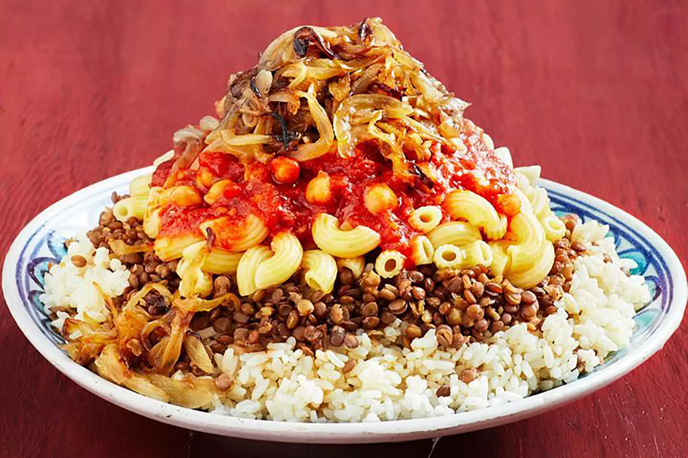

Diet
Between this training, Salah has various nutrient-dense meals to keep his body at a low-fat percentage. He eats low-calorie bread or fruits and has milk for breakfast. For dinner and lunch, they're composed of protein from chicken or other meats, and vegetables or non-sugar fruit juices. Most importantly, Salah's favorite Egyptian dish, koshari, composed of lentils, rice, tomato sauce, garlic, and fried onions is sometimes eaten by him on special occasions as it's full of carbs.
